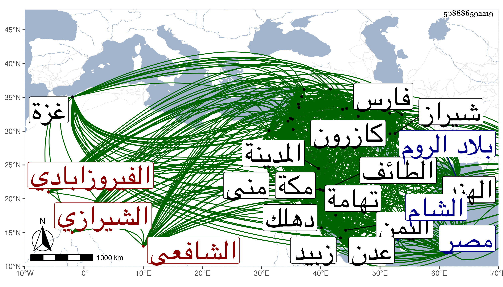

0902Sakhawi.DawLamic.ITO20230111-ara1.EIS1600.508886592219
Biography ID: 508886592219
274
محمد بن يعقوب بن محمد بن إبراهيم بن عمر بن أبي بكر بن أحمد بن محمود بن إدريس بن فضل الله بن الشيخ أبي إسحاق إبرهيم بن علي بن يوسف ابن عبد الله المجد أبو الطاهر وأبو عبد الله بن السراج أبي يوسف بن الصدر أبي إسحاق بن الحسام بن السراج الفيروزابادي الشيرازي اللغوي الشافعي . ولد في ربيع الآخر وقيل في جمادى الآخرة سنة تسع وعشرين وسبعمائة بكازرون من أعمال شيراز ونشأ بها فحفظ القرآن وهو ابن سبع وجود الخط ثم نقل فيها كتابين من كتب اللغة وانتقل إلى شيراز وهو ابن ثمان وأخذ اللغة والأدب عن والده ثم عن القوام عبد الله بن محمود بن النجم وغيرهما من علماء شيراز وسمع فيها على الشمس أبي عبد الله محمد بن يوسف الأنصاري الزرندي المدني الصحيح بل قرأ عليه جامع الترمذي هناك درسا بعد درس في شهور سنة خمس وأربعين ، وارتحل إلى العراق فدخل واسط وقرأ بها القراءات العشر على الشهاب أحمد بن علي الديواني ثم دخل بغداد في السنة المذكورة فأخذ عن التاج محمد بن السباك والسراج عمر ابن علي القزويني خاتمة أصحاب الرشيد بن أبي القسم وعليه سمع الصحيح أيضا بل قرأ عليه المشارق للصغاني والمحيوي محمد بن العاقولي ونصر الله بن محمد ابن الكتبي والشرف عبد الله بن بكتاش وهو قاضي بغداد ومدرس النظامية وعمل عنده معيدها سنين ، ثم ارتحل إلى دمشق فدخلها سنة خمس وخمسين فسمع بها من النقي السبكي وأكثر من مائة شيخ منهم ابن الخباز وابن القيم ومحمد بن إسمعيل بن الحموي وأحمد بن عبد الرحمن المرداوي وأحمد بن مظفر النابلسي ويحيى بن علي بن مجلي بن الحداد الحنفي وغيرهم ببعلبك وحماة وحلب وبالقدس من العلائي والبياني والتقي القلقشندي والشمس السعودي وطائفة وقطن به نحو عشر سنين وولي به تداريس وتصادير وظهرت فضائله وكثر الأخذ عنه فكان ممن أخذ عنه الصلاح الصفدي وأوسع في الثناء عليه ، ثم دخل القاهرة بعد أن سمع بغزة والرملة فكان ممن لقيه بها البهاء بن عقيل والجمال الأسنوي وابن هشام وسمع من العز بن جماعة والقلانسي والمظفر العطار وناصر الدين التونسي وناصر الدين الفارقي وابن نباتة والعرضي وأحمد بن محمد الجزائري وسمع بمكة من الضياء خليل المالكي واليافعي والتقي الحرازي ونور الدين القسطلاني وجماعة ، وجال في البلاد الشمالية والمشرقية ودخل الروم والهند ولقي جمعا جما من الفضلاء وحمل عنهم شيئا كثيرا تجمعهم مشيخته تخريج الجمال بن موسى المراكشي وقال فيما قرأته بخطه أن من مشايخه من أصحاب الفخر ابن البخاري والنجيب الحراني وابن عبد الدائم والشرف الدمياطي الجم الغفير والجمع الكثير من مشايخ العراق والشام ومصر وغيرها وأن من مروياته الكتب الستة وسنن البيهقي ومسند أحمد وصحيح ابن حبان ومصنف ابن أبي شيبة وقرأ البخاري بجامع الأزهر في رمضان سنة خمس وخمسين على ناصر الدين محمد ابن أبي القسم الفارقي وسمعه على الشمس محمد السعودي بقراءة الشهاب أبي محمود الحافظ وبدمشق على العز بن الحموي ، وقرأ بعضه على التقي إسماعيل القلقشندي والحافظ أبي سعيد العلائي ، وقرأ مسلما على البياني بالمسجد الأقصى في أربعة عشر مجلسا وعلى ناصر الدين أبي عبد الله محمد بن جهبل بدمشق تجاه نعل النبي صلى الله عليه وسلم في ثلاثة أيام وبعضه قراءة وسماعا على ابن الخباز والعز بن جماعة والنجم أبي محمد عبد الرحيم بن إبرهيم بن هبة الله بن البارزي وأخيه الزين أبي حفص وناصر الدين الفارقي وجميعه سماعا على الجمال أبي عبد الله محمد بن أحمد بن عبد المعطي بالمسجد الحرام تجاه الكعبة وسمع سنن أبي داود على أبي حفص عمر بن عثمان بن سالم بن خلف وأبي إسحق إبرهيم بن محمد بن يونس بن القواس وقرأ الترمذي أيضا على ابن قيم الضيائية والنجم أبي محمد بن البارزي وابن ماجه ببعلبك على الخطيب الصفي أبي الفضائل عبد الكريم والعز بن المظفر والمصابيح على حمزة بن محمد كما أوضحته في التاريخ الكبير ثم دخل زبيد في رمضان سنة ست وتسعين وبعد وفاة قاضي الأقضية باليمن كله الجمال الريمي شارح التنبيه فتلقاه الملك الأشرف إسماعيل بالقبول وبالغ في إكرامه وصرف له ألف دينار سوى ألف كان أمر ناظر عدن بتجهيزه بها واستمر مقيما في كنفه على نشر العلم فكثر الانتفاع به وبعد مضي سنة وأزيد من شهرين أضاف إليه قضاء اليمن كله وذلك في أول ذي الحجة سنة سبع وتسعين بعد ابن عجيل فارتفق بالمقام في تهامة وقصده الطلبة وقرؤا عليه الحديث السلطان فمن دونه فاستقرت قدمه بزبيد مع الاستمرار في وظيفته إلى حين وفاته وهي مدة تزيد على عشرين سنة بقية حياة الأشرف ثم ولده الناصر أحمد ، وكان الأشرف قد تزوج ابنته لمزيد جمالها ونال منه برا ورفعة بحيث أنه صنف له كتابا وأهداه له على الطباق فملأها له دراهم ، وفي أثناء هذه المدة قدم مكة أيضا مرارا فجاور بها وبالمدينة النبوية والطائف وعمل فيها مآثر حسنة لو تمت . وكان يحب الانتساب إلى مكة مقتديا بالرضى الصغاني فيكتب بخطه الملتجئ إلى حرم الله تعالى ولم يقدر له قط أنه دخل بلدا إلا وأكرمه متوليها وبالغ مثل شاه منصور بن شجاع صاحب تبريز والأشرف صاحب مصر والأشرف صاحب اليمن وابن عثمان ملك الروم وأحمد ابن أويس صاحب بغداد وتمرلنك الطاغية وغيرهم ، واقتنى من ذلك كتبا نفيسة ، حتى نقل الجمال الخياط أنه سمع الناصر أحمد بن إسماعيل يقول أنه سمعه يقول اشتريت بخمسين ألف مثقال ذهبا كتبا ، وكان لا يسافر إلا وصحبته منها عدة أحمال ويخرج أكثرها في كل منزلة فينظر فيها ثم يعيدها إذا ارتحل وكذا كانت له دنيا طائلة ولكنه كان يدفعها إلى من يمحقها بالإسراف في صرفها بحيث يملق أحيانا ويحتاج لبيع بعض كتبه فلذلك لم يوجد له بعد وفاته ما كان يظن به . وصنف الكثير فمن ذلك كما كتبه بخطه مع إدراجي فيه أشياء عن غيره في التفسير بصائر ذوي التمييز في لطائف الكتاب العزيز مجلدان وتنوير المقياس في تفسير ابن عباس أربع مجلدات وتيسير فاتحة الإياب في تفسير فاتحة الكتاب مجلد كبير والدر النظيم المرشد إلى مقاصد القرآن العظيم وحاصل كورة الخلاص في فضائل سورة الإخلاص وشرح قطبة الحساف في شرح خطبة الكشاف . وفي الحديث والتاريخ شوارق الأسرار العلية في شرح مشارق الأنوار النبوية أربع مجلدات ومنح الباري بالشيح الفسيح المجاري في شرح صحيح البخاري كمل ربع العبادات منه في عشرين مجلدة ويخمن تمامه في أربعين مجلدا وعمدة الحكام في شرح عمدة الأحكام مجلدان وامتضاض السهاد في افتراض الجهاد مجلد والإسعاد بالإصعاد إلى درجة الجهاد ثلاث مجلدات والنفحة العنبرية في مولد خير البرية والصلاة والبشر في الصلاة على خير البشر والوصل والمنى في فضل منى والمغانم المطابة في معالم طابة ومهيج الغرام إلى البلد الحرام وإثارة الحجون لزيارة الحجون قال إنه عمله في ليلة كما في خطبته وأحاسن اللطائف في محاسن الطائف وفصل الدرة من الخرزة في فضل السلامة على الجنزة قريتان بوادي الطائف وروضة الناظر في ترجمة الشيخ عبد القادر والمرقاة الوفية في طبقات الحنفية أخذها من طبقات عبد القادر الحنفي والبلغة في تراجم أئمة النحاة واللغة والفضل الوفي في العدل الأشرفي ونزهة الأذهان في تاريخ أصبهان في مجلد وتعين الغرفات للمعين على عين عرفات ومنية السول في دعوات الرسول والتجاريح في فوئد متعلقة بأحاديث المصابيح وتسهيل طريق الوصول إلى الأحاديث الزائدة على جامع الأصول عمله وكذا الأحاديث الضعيفة وهو في مجلدات للناصر وكراسة في علم الحديث والدر الغالي في الأحاديث العوالي وسفر السعادة والمتفق وضعا والمختلف صقعا وفي اللغة وغيرها اللامع المعلم العجاب الجامع بين المحكم والعباب وزيادات امتلأ بها الوطاب واعتلي منها الخطاب ففاق كل مؤلف هذا الكتاب يقدر تمامه في مائة مجلد كل مجلد يقرب من صحاح الجوهري في المقدار رأيت بخطه أيضا أنه كمل منه مجاليد خمسة والقاموس المحيط والقابوس الوسيط الجامع لما ذهب من لغة العرب شماطيط في جزءين ضخمين وهو عديم النظير ومقصود ذوي الألباب في علم الأعراب مجلد وتحبير الموشين فيما يقال بالسين والشين أخذه عنه البرهان الحلبي الحافظ ونقل عنه أنه تتبع أوهام المجمل لابن فارس في ألف موضع مع تعظيمه لابن فارس وثنائه عليه والمثلث الكبير في خمس مجلدات والصغير والروض المسلوف فيما له اسمان إلى ألوف والدرر المبثثة في الغرر المثلثة وبلاغ التلقين في غرائب اللعين وتحفة القماعيل فيمن يسمى من الملائكة والناس إسماعيل وأسماء السراح في أسماء النكاح وأسماء الغادة في أسماء العادة والجليس الأنيس في أسماء الخندريس في مجلد وأنواء الغيث في أسماء الليث وأسماء الحمد وترقيق الأسل في تصفيق العسل في كراريس ومزاد المزاد وزاد المعاد في وزن بانت سعاد وشرحه في مجلد والنخب الطرائف في النكت الشرائف إلى غيرها من مختصر ومطول . قال التقي الكرماني : كان عديم النظير في زمانه نظما ونثرا بالفارسي والعربي جاب البلاد وسار إلى الجبال والوهاد ورحل وأطال النجعة واجتمع بمشايخ كثيرة عزيزة وعظم بالبلاد أقام بدهلك مدة وعظمه سلطانها وبالروم مدة وبجله ملكها وبفارس وغيرها وورد بغداد في حدود سنة أربع وخمسين واجتمع بوالدي وقرأ عليه ورحل معه إلى الشام ثم إلى مصر وسمعا بالقاهرة الصحيح على الفارقي وفارقه والدي فحج ورجع إلى بغداد وأقام المجد بالقاهرة مدة ثم بالقدس ثم بالشام ثم جاور بمكة مدة عشر سنين أو أكثر وصنف بها تصانيف منها شرح البخاري سماه منح الباري وأظن أنه لم يكمل والقاموس مطولا في مجلدات عديدة ثم أمره والدي باختصاره فاختصر في مجلد ضخم وفيه فوائد عظيمة وفرائد كريمة واعتراضات على الجوهري وكان كثير الاعتناء بتصانيف الصغاني ويمشي على نهجه ويتبع طريقه ويقتدي بصنيعه حتى في المجاورة بمكة ، وفي الجملة كان جملة حسنة وفي الآخر ورد بغداد من مكة في حدود نيف وثمانين واجتمع بوالدي أيضا ثم ذهب إلى الهند ثم رجع إلى مكة وأقام بها مدة ثم ورد بغداد سنة ونيف وتسعين بعد وفاة والدي ولازمته أيضا واستفدت منه شيئا كثيرا ثم سافر إلى بلاد فارس ثم رجع إلى مكة بعد أن اجتمع بتمرلنك في شيراز وعظمه وأكرمه ووصله بنحو مائة ألف درهم ثم توجه إلى مكة من طريق البحر ثم دخل بلاد اليمن وأقام بعدن وبتعز وكان ملكه له يكرم ويعز. وقال الخزرجي في تاريخ اليمن أنه لم يزل في ازدياد من علو الوجاهة والمكانة ونفوذ الشفاعة والأوامر على قضاة الأمصار ورام في سنة تسع وتسعين التوجه لمكة فكتب إلى السلطان ما مثاله ومما ينهيه إلى العلوم الشريفة أنه غبر خاف عليكم ضعف أقل العبيد ورقة جسمه ودقة بنيته وعلو سنه وقد آل أمره إلى أن صا كالمسافر الذي تحزم وانتقل إذ وهن العظم بل والرأس اشتعل وتضعضع السن وتقعقع الشن فما هو إلا عظام في جراب وبنيان مشرف على خراب وقد ناهز العشر التي تسميها العرب دقاقة الرقاب وقد مر على المسامع الشريفة غير مرة في صحيح البخاري قول سيدنا رسول الله صلى الله عليه وسلم إذا بلغ المرء ستين سنة فقد أعذر الله إليه فكيف من نيف على السبعين وأشرف على الثمانين ولا يجمل بالمؤمن أن تمضي عليه أربع سنين ولا يتجدد له شوق وعزم إلى بيت رب العالمين وزيارة سيد المرسلين وقد ثبت في الحديث النبوي ذلك وأقل العبيد له ست سنين عن تلك المسالك وقد غلب عليه الشوق حتى جل عمره عن الطوق ومن أقصى أمنيته أن يجدد العهد بتلك المعاهد ويفوز مرة أخرى بتقبيل تلك المشاهد وسؤاله من المراحم الحسنية الصدقة عليه بتجهيزه في هذه الأيام مجردا عن الأهالي والأقوام قبل اشتداد الحر وغلبة الأوام فإن الفصل أطيب والريح أزيب ومن الممكن أن يفوز الإنسان بإقامة شهر في كل حرم ويحظى بالتملي من مهابط الرحمة والكرم وأيضا كان من عادة الخلفاء سلفا وخلفا أنهم كانوا يبردون البريد عمدا قصدا لتبليغ سلامهم إلى حضرة سيد المرسلين صلوات الله وسلامه عليه مددا فاجعلني جعلني الله فداك ذاك البريد فلا أتمنى شيئا سواه ولا أريد :
| شوقي إلى الكعبة الغراء قد زادا | فاستحمل القلص الوجادة الزادا |
| واستأذن الملك المنعام زيد علا | واستودع الله أصحابا وأولادا |
فلما وصل هذا إلى السلطان كتب في طرة الكتابة ما مثاله : صدر الجمال المصري على لساني ما يحققه لك شفاها أن هذا شيء لا ينطق به لساني ولا يجري به قلمي فقد كانت اليمين عميا فاستنارت فكيف يمكن أن تتقدم وأنت تعلم أن الله تعالى قد أحيا بك ما كان ميتا من العلم فبالله عليك إلا ما وهبت لنا بقية هذا العمر والله يا مجد الدين يمينا بارة أني أرى فراق الدنيا ونعيمها ولا فراقك أنت اليمن وأهله . وذكره التقي الفاسي فقال : وكانت له بالحديث عناية غير قوية وكذا بالفقه وله تحصيل في فنون من العلم سيما اللغة فله فيها اليد الطولى وألف فيها تواليف حسنة منها القاموس ولا نظير له في كتب اللغة لكثرة ما حواه من الزيادات على الكتب المعتمدة كالصحاح ، قلت وقد ميز فيه زياداته عليه فكانت غاية في الكثرة بحيث لو أفردت لجاءت قدر الصحاح أو أكثر في عدد الكلمات وأما ما نبه عليه من أوهامه فشيء كثير أشار إليه في الهامش بصفر وأعراه من الشواهد اختصارا ، ونبه في خطبته على الاكتفاء عن قوله معروف بحرف الميم وعن موضع بالعين وعن الجمع بالجيم وعن جمع الجمع بجج وعن القرية بالهاء وعن البلد بالدال وضبط ذلك بالنظم بعضهم بل أثنى على الكتاب الأئمة نظما ونثرا وتعرض فيه لأكثر ألفاظ الحديث والرواة ووقع له في ضبط كثيرين خطأ فإنه كما قال التقي الفاسي في ذيل التقييد لم يكن بالماهر في الصنعة الحديثية وله فيما يكتبه من الأسانيد أوهام وأما شرحه على البخاري فقد ملأه بغرائب المنقولات سيما أنه لما اشتهرت باليمن مقالة ابن عربي وغلبت على علماء تلك البلاد صار يدخل في شرحه من قبوحاته الهلكية ما كان سببا لشين الكتاب المذكور ، ولذا قال شيخنا أنه رأى القطعة التي كملت منه في حياة مؤلفه وقد أكلتها الأرضة بكمالها بحيث لا يقدر على قراءة شيء منها قال ولم أكن أتهمه بالمقالة المذكورة إلا أنه كان يحب المداراة ولقد أظهر لي إنكارها والغض منها ، ثم ذكر الفاسي أنه ذكر أنه ألف شرح الفاتحة في ليلة واحدة فكأنه غير المشار إليه وكذا ألف ترقيق الأسل في ليلة عند ما سأله بعضهم عن العسل هل هو قيء النحلة أو خرؤها فكأنه غير المتداول لكونه في نحو نصف مجلد وأنه وقف على مؤلفه في علم الحديث بخطه وأنه ذكر في مؤلفه في فضل الحجون من دفن فيه من الصحابة مع كونهم لم يصرح في تراجمهم من كتب الصحابة بذلك بل وما رأيت وفاة كلهم بمكة فإن كان في دفنهم به قول من قال أنهم نزلوا مكة فذلك غير لازم لكونهم كانوا يدفنون في أماكن متعددة . وقال أيضا إن الناس استغربوا منه انتسابه للشيخ أبي إسحاق وكذا لأبي يكر الصديق ، ولذا قال شيخنا لم أزل أسمع مشايخنا يطعنون في انتسابه إلى الشيخ أبي إسحاق مستندين إلى أن أبا إسحق لم يعقب قال ثم ارتقى درجة فادعى بعد أن ولى القضاء باليمن بمدة طويلة أنه من ذرية أبي بكر الصديق وصار يكتب بخطه محمد الصديقي ولم يكن مدفوعا عن معرفة إلا أن النفس تأبى قبول ذلك ، وقال الجمال بن الخياط فيما نقله عن خط الذهبي في الشيخ أبي إسحاق أنه لم يتأهل ظنا وكذا أنكر عليه غيره تصديقه بوجود رتن الهندي وإنكاره قول الذهبي في الميزان أنه لا وجود له ويقول أنه دخل قريته ورأى ذريته وهم مطبقون على تصديقه قال الفاسي وله شعر كثير في بعضه قلق لجلبه فيه ألفاظا لغوية عويصة ونثره أعلى وكان كثير الاستحضار لمستحسنات من الشعر والحكايات وله خط جيد مع الإسراع وسرعة حفظ بلغني عنه أنه قال ما كنت أنام حتى أحفظ مائتي سطر وقال أن أول قدومه مكة فيما علم سنة ستين ثم في سنة سبعين وأقام بها خمس سنين أو ستا متوالية وتكرر قدومه لها وارتحل منها إلى الطائف وكان له فيه بستان وكذا أنشأ بمكة دارا على الصفا عملها مدرسة للأشرف صاحب اليمن وقرر بها مدرسين وطلبة وفعل بالمدينة كذلك ثم أعرض عن ذلك بعد موت الأشرف وله بمنى وغيرها دور ، وحدث بكثير من تصانيفه ومروياته سمع منه الجمال بن ظهيرة وروى عنه في حياته ومات قبله بشهر . وترجمه الصلاح الأقفهسي في معجم الجمال بقوله : كتب عنه الصلاح الصفدي وبالغ في الثناء عليه وجال في البلاد ولقي الملوك والأكابر ونال وجاهة ورفعة وصنف التصانيف السائرة كالقاموس وغيره وولي قضاء الأقضية ببلاد اليمن وقدم مكة وجاور بها مدة وابتنى بها دارا . وطول المقريزي في عقوده ترجمته وقال أن آخر ما اجتمع به في مكة سنة تسعين وقرأت عليه بعض مصنفاته وناولني قاموسه وأجازني وأفادني . وكذا لقيه شيخنا بزبيد في سنة ثمانمائة وتناول منه أكثر القاموس وقرأ عليه وسمع منه أشياء وأورده في معجمه وأنبائه وقرض لشيخنا تعليق التعليق وعظمه جدا والتقي الفاسي وقرأ عليه أشياء وأورده في تاريخ مكة وذيل التقييد والبرهان الحلبي أخذ عنه تحبير الموشين في آخرين ممن أخذت عنهم كالموفق الأبي والتقي بن فهد وأرجو إن تأخر الزمان يكون آخر أصحابه موتا على رأس القرن العاشر ، وممن ترجمه ابن خطيب الناصرية لكن باختصار جدا والتقي بن قاضي شهبة وغيرهما . مات وقد متع بسمعه وحواسه في ليلة عشرى شوال سنة سبع عشرة بزبيد وقد ناهز التسعين وكان يرجو وفاته بمكة فما قدر رحمه الله وإيانا . أنشدني شيخي بالقاهرة والموفق الأبي بمكة قال كل منهما أنشدني المجد لنفسه مما كتبه عنه الصفدي في سنة سبع وخمسين :
| أحبتنا الأماجد إن رحلتم | ولم ترعوا لنا عهدا وإلا |
| نودعكم ونودعكم قلوبا | لعل الله يجمعنا وإلا |
وعندي في ترجمته بأول ما كتبته من القاموس فوائد منها قول الأديب المفلق نور الدين علي بن محمد بن العليف العكي العدناني المكي الشافعي وقد قرأ عليه القاموس
| مذ مد مجد الدين في أيامه | من بعض أبحر علمه القاموسا |
| ذهبت صحاح الجوهري كأنها | سحر المدائن حين ألقى موس : |
